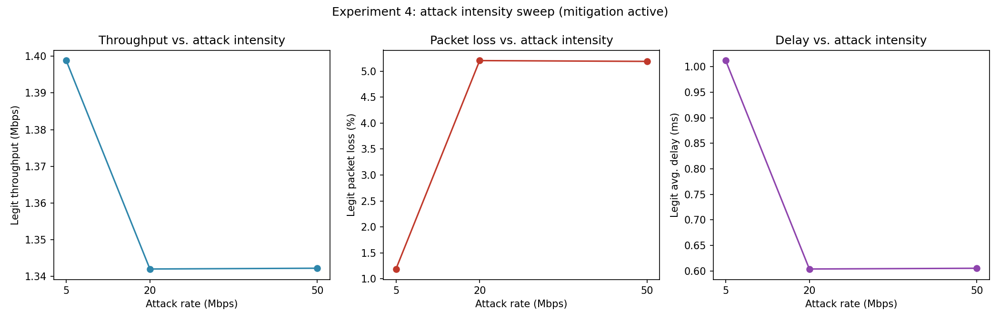
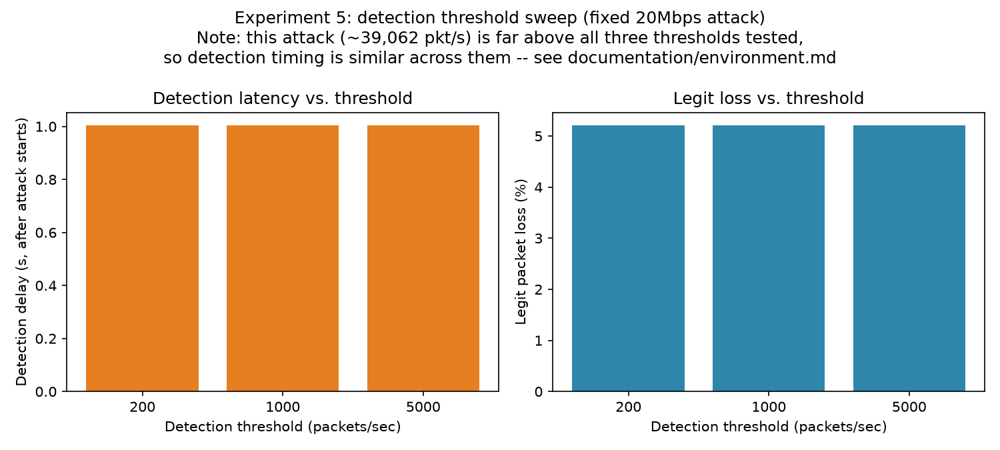

The complete project report
The demo above replays the headline numbers live. Below is the full report: architecture rationale, the complete six-group / eleven-run experiment matrix, every result (not just the two shown above), two real bugs found while building this, and the honest limitations.
01Architecture & design
Point-to-point, not shared, links
Every host — client, attacker, or server — has its own dedicated CSMA link into the switch. There is no shared Ethernet segment, which means a per-port rate is, in this topology, a per-source rate — the property that makes plain port-statistics polling sufficient for detection.
A deliberately slow victim link
The server's own access link is the slowest in the topology (10 Mbps default vs. 100 Mbps for everyone else), modeling the actual resource a volumetric flood exhausts: the victim's own bandwidth, not the core network.
One controller class, two experiments
SdnController implements L2 learning-switch forwarding, OpenFlow monitoring, threshold detection, and DROP-rule mitigation in one place. An EnableMitigation attribute toggles mitigation off per run, so the exact same class drives both the "attack, no mitigation" and "attack, mitigated" experiments.
Real OpenFlow, not a simulation of a simulation
The switch is a real OFSwitch13Device backed by the BOFUSS OpenFlow 1.3 datapath library — actual OFPMP_PORT_STATS multipart messages and actual flow-mod drop rules, not a scripted stand-in for them.
02Experiments & methodology
Six experiment groups, eleven total runs, each writing
flowmon.xml (real per-flow throughput/delay/loss via ns-3
FlowMonitor), monitor-stats.csv, detections.csv, switch
datapath logs, and (where enabled) per-port pcaps. Nothing in the
results below is hand-entered or estimated — all of it is generated
directly from these files by scripts/analysis/generate_graphs.py,
and the live demo above reads the same files via scripts/analysis/build_dashboard.py.
| # | Group | What it varies |
|---|---|---|
| 1 | exp1-normal | Normal traffic only — the baseline. |
| 2 | exp2-attack-no-mitigation | Attack; detection logs transitions but never blocks. |
| 3 | exp3-attack-mitigated | Attack with full detection + mitigation active. |
| 4 | exp4-intensity-{low,medium,high} | Attack rate: 5 / 20 / 50 Mbps, mitigated. |
| 5 | exp5-threshold-{200,1000,5000} | Detection threshold (pkt/s), fixed 20 Mbps attack, mitigated. |
| 6 | exp6-attackers-{1,3} | 1 vs. 3 simultaneous attackers, mitigated. |
Key tunable parameters
| Flag | Default | Meaning |
|---|---|---|
--numClients | 3 | Legitimate client count |
--perClientRate | 500Kbps | Each client's UDP send rate |
--numAttackers | 1 | Attacker count |
--attackRate | 20Mbps | Each attacker's flood rate |
--threshold | 1000 | Detection threshold, packets/sec |
--monitorInterval | 1.0 | Controller polling interval, seconds |
--simTime | 20 | Total simulation duration, seconds |
03Full results
| Experiment | Legit loss | Legit throughput | Avg delay | Detection delay |
|---|---|---|---|---|
| Normal traffic | 0.0% | 1.416 Mbps | 0.147 ms | — |
| Attack, no mitigation | 46.9% | 0.752 Mbps | 1.19 ms | 1.003 s |
| Attack, mitigated | 5.2% | 1.342 Mbps | 0.604 ms | 1.003 s |
| Intensity: low (5 Mbps) | 1.19% | 1.399 Mbps | 1.012 ms | 1.003 s |
| Intensity: medium (20 Mbps) | 5.2% | 1.342 Mbps | 0.604 ms | 1.003 s |
| Intensity: high (50 Mbps) | 5.19% | 1.342 Mbps | 0.605 ms | 1.003 s |
| Threshold: 200 pkt/s | 5.2% | 1.342 Mbps | 0.604 ms | 1.003 s |
| Threshold: 1000 pkt/s | 5.2% | 1.342 Mbps | 0.604 ms | 1.003 s |
| Threshold: 5000 pkt/s | 5.2% | 1.342 Mbps | 0.604 ms | 1.003 s |
| 1 attacker, mitigated | 5.2% | 1.342 Mbps | 0.604 ms | 1.003 s |
| 3 attackers, mitigated | 9.5% | 1.281 Mbps | 0.761 ms | 1.006 s |




04Bugs found along the way
Two real correctness bugs were found while building traffic monitoring — both confirmed with actual packet captures before being called "fixed," not assumed.
eth_dst-only flow matching never learned a pure responder's MAC
switch-stats-*.log showed every single data packet hitting
the controller via packet-in for the entire run, well past
steady state. Cause: flow-mod rules matched only
eth_dst = <learned mac>, so a host that only ever replies
(the server) never had its own MAC learned — its replies always
matched the requester's already-installed flow and were forwarded
without ever reaching the controller. Fixed by matching on the
(eth_src, eth_dst) pair, the same approach the standard Ryu
simple_switch_13 tutorial controller uses.
Unrealistic channel delay silently capped every host to ~500 pps
A configured 20 Mbps flood (~39,062 expected pkt/s at 64-byte
packets) measured only ~350–430 pkt/s leaving the attacker's NIC —
regardless of whether the configured rate was 1 Mbps or
20 Mbps. Cause: every CSMA link used Delay = 2ms
(WAN-style latency on what should model a LAN); ns-3's CsmaChannel
holds the shared bus for the full propagation delay per
transmission, capping acquisitions at 1/0.002 = 500/sec
regardless of application rate. Misdiagnosed twice before being
found (first suspected switch capacity, then the default FqCoDel
queue discipline) — fixed by changing Delay to
MicroSeconds(2) on every link; verified the attacker's port
then showed ~39,062 pps, matching theory exactly.
05Known limitations / honest caveats
-
The detection-threshold sweep (Experiment 5) shows flat results
across 200/1000/5000 pkt/s because the tested attack
(~39,062 pkt/s) sits far above all three — a real property of
that experiment's specific setup, not a bug. A threshold
between the legitimate rate (~122 pkt/s) and a weaker attack
would be a more sensitive test; the parameters make this easy to
run (
--attackRate=1.5Mbps --threshold=300, for instance). -
Mitigation blocks by switch port, not by IP/MAC identity —
correct and sufficient for this topology (one host per port), but
would need extending (matching on
eth_src/ip_srcinstead ofin_port) for a topology where multiple hosts can share a port. -
Detection latency is bounded below by
MonitorInterval(default 1s) — an attack is never caught faster than one polling cycle. Lowering the interval trades CPU/control-channel overhead for faster detection.
06Tech stack & reproducing it
| Component | Version used |
|---|---|
| OS | Ubuntu 24.04.4 LTS under WSL2 |
| ns-3 | 3.40 (gitlab.com/nsnam/ns-3-dev, tag ns-3.40) |
| OFSwitch13 | 5.2.3 (github.com/ljerezchaves/ofswitch13) |
| GCC/G++ | 13.3.0 |
| CMake | 3.28.3 |
| Python | 3.12, matplotlib (for scripts/analysis/ graphs only) |
Full install steps, the exact apt package list, and two real
environment bugs (a glibc/strlcpy conflict on Ubuntu 24.04, and the
channel-delay issue above) are documented in
documentation/environment.md.
Once ns-3 + OFSwitch13 are built, this project's own code is driven by one script:
cd scripts
bash run-all.sh # build -> run every experiment -> generate graphs -> print summarySee the main README for the full command reference, including running a single simulation with custom parameters.